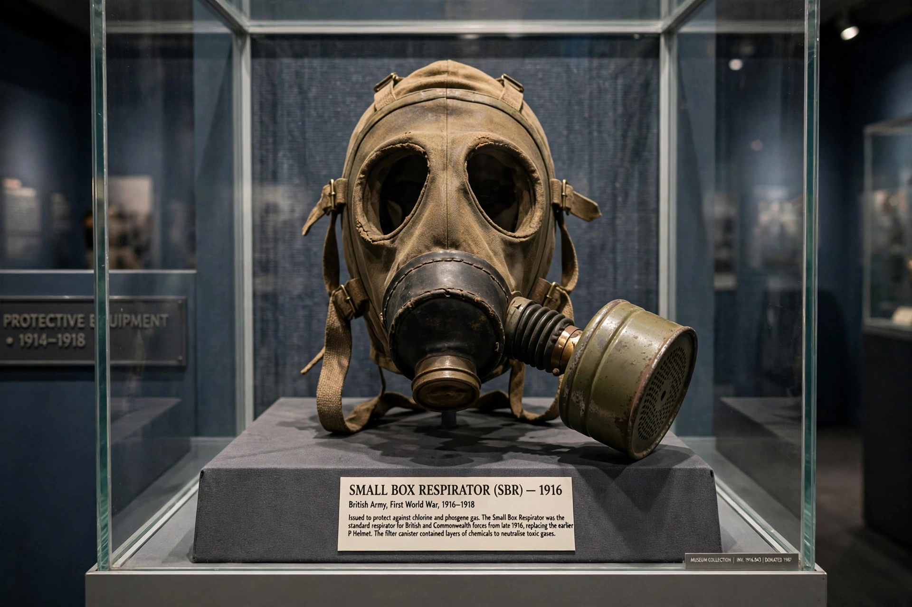

| Classes | Nerve, blister, blood, choking agents |
|---|---|
| Examples | Mustard gas, chlorine, sarin, VX |
| Legal status | Prohibited by the Chemical Weapons Convention (1993) |
| Oversight | OPCW, The Hague |
A chemical weapon is a specialised munition or device that uses the toxic properties of chemicals to kill, injure or incapacitate.
Classes
Agents are grouped by effect: nerve agents (sarin, VX) disrupt the nervous system; blister agents (mustard gas) burn skin and lungs; choking agents (chlorine, phosgene) damage the respiratory tract; blood agents interfere with oxygen use. Riot-control agents such as tear gas are less lethal but are also banned as a method of warfare.
History
Poisoned weapons are ancient, but industrial-scale use began in the First World War, notably chlorine at Ypres in 1915, followed by phosgene and mustard gas. Later uses included the Iran-Iraq War and attacks in Syria, investigated by the OPCW.
Control and disarmament
The Geneva Protocol (1925) banned use; the Chemical Weapons Convention (1993, in force 1997) bans development, production and stockpiling and requires verified destruction, monitored by the Organisation for the Prohibition of Chemical Weapons.